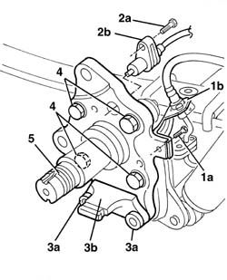
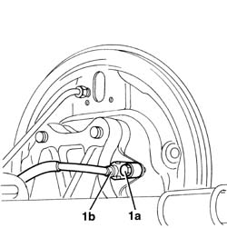
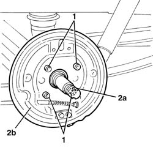

4450D18 REAR WHEEL STUB AXLE - R.& R.
- Path
- Procedures > 44 SUSPENSION AND WHEELS > 4450 WHEELS AND HUBS > 4450D REAR WHEEL HUBS > 4450D18 REAR WHEEL STUB AXLE - R.& R.
- Kind
- repair procedure (removal / refitting; the operation number is the code)
- Applies to
- all engines; all production periods
- Interactive page
- https://sloeber94.github.io/elrnDB-fDct/en/#/244001218
Applies to: all engines; all production periods; only with equipment: Disc brakes
 Removing
Removing
 Refitting
RefittingOp. 3310B30 REAR BRAKE DISCS R R
Op. 3310B50 REAR BRAKE DISCS R R
Op. 3380C10 HANDBRAKE SHOES - R.R.
Op. 4450D10 HUB OF ONE REAR WHEEL, L/H OR R/H - R+R WITH WHEEL REMOVED
Op. 3380C41 REAR WHEEL BRAKE BACK PLATE - R.R.
1. Undo the bolt (1a) and move the brake pipe support (1b).
2. Undo the bolt (2a) and move the ABS sensor (2b).
3. Undo the bolts (3a) and remove the support (3b).
4. Undo the stub axle fixing bolts.
5. Remove the stub axle.

Applies to: all engines; all production periods; only with equipment: Disc brakes
Refitting
Removing- Place the stub axle in position.
- Tighten the stub axle fixing bolts.
Value - daNm | Fastening | Component | Ø | |
|---|---|---|---|---|
- | 13.7 - 19.9 | Bolt | - | M14x1.5 |
- Position the support and secure it using the bolts.
- Position the ABS sensor and secure it using the bolt.
Value - daNm | Fastening | Component | Ø | |
|---|---|---|---|---|
- | 0,8 | Bolt | - | M6 |
- Position the pipe support and secure it using the bolt.
Op. 3380C41 REAR WHEEL BRAKE BACK PLATE - R.R.
Op. 4450D10 HUB OF ONE REAR WHEEL, L/H OR R/H - R+R WITH WHEEL REMOVED
Op. 3380C10 HANDBRAKE SHOES - R.R.
Op. 3310B50 REAR BRAKE DISCS R R
Applies to: all engines; all production periods
Removing
RefittingOp. 3320B30 LH OR RH REAR BRAKE DRUM (ONE) R R
Op. 4450D10 HUB OF ONE REAR WHEEL, L/H OR R/H - R+R WITH WHEEL REMOVED
Op. 3320B60 REAR BRAKE SHOES - R.R.
Op. 3320B20 REAR BRAKE SHOE CYLINDER (ONE) LEFT OR RIGHT - REPLACE.
1. Undo the bolt (1a) and move the ABS sensor (1b).

Applies to: all engines; all production periods; only with equipment: Drum brakes
1. Undo the stub axle fixing bolts.

Applies to: all engines; all production periods; only with equipment: Drum brakes
Refitting
Removing- Place the stub axle and brake back plate in position.
- Tighten the stub axle and brake back plate fixing bolts.
Value - daNm | Fastening | Component | Ø | |
|---|---|---|---|---|
- | 13.7 - 19.9 | Bolt | - | M14x1.5 |
- Position the ABS sensor and secure it using the bolt.
Value - daNm | Fastening | Component | Ø | |
|---|---|---|---|---|
- | 0,8 | Bolt | - | M6 |
Op. 3320B20 REAR BRAKE SHOE CYLINDER (ONE) LEFT OR RIGHT - REPLACE.
Op. 3320B60 REAR BRAKE SHOES - R.R.
Op. 4450D10 HUB OF ONE REAR WHEEL, L/H OR R/H - R+R WITH WHEEL REMOVED
Topics linked from this page (9)
- 3310B30 REAR BRAKE DISCS R R
- 3310B50 REAR BRAKE DISCS R R
- 3320B20 REAR BRAKE SHOE CYLINDER (ONE) LEFT OR RIGHT - REPLACE.
- 3320B30 LH OR RH REAR BRAKE DRUM (ONE) R R
- 3320B60 REAR BRAKE SHOES - R.R.
- 3380A04 HANDBRAKE - CHECK TRAVEL
- 3380C10 HANDBRAKE SHOES - R.R.
- 3380C41 REAR WHEEL BRAKE BACK PLATE - R.R.
- 4450D10 HUB OF ONE REAR WHEEL, L/H OR R/H - R+R WITH WHEEL REMOVED